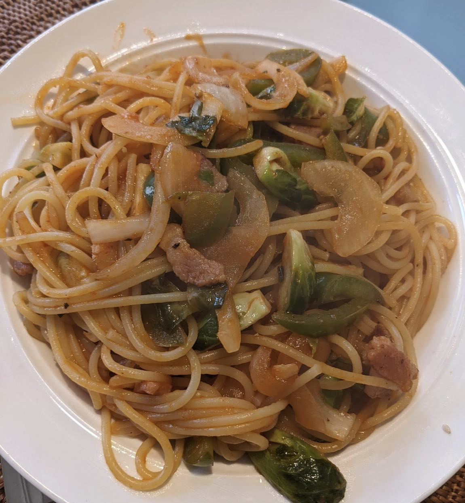

1. はじめに
家族が一足先に日本に一時帰国したので、自分の食事は自分で作ります。連日ステーキを焼いても飽きるので、これまで家族の賛同が得られず作れなかった、懐かしのスパゲティナポリタンに挑戦することにしました。
2. 初日
ケチャップで味付けすればナポリタンになるようなので、いつもの要領で作ってみます。ナポリタンはチープさが命なので、ガーリックオイルとかフレッシュトマトとかは使いません。が、先日の残りのラムチョップ、ベイクドポテト&芽キャベツが冷蔵庫にあるので、これらを合わせて豪華に行きます。
早速反省点です:
- アルデンテはだめ! 8分推奨のパスタをいつものように6分しか茹でなかったのですが、硬いです。
- 味付けが薄い。ケチャップボトルに残っていた分を全て使ったのですが、全然足りませんでした。やはり、初めての料理は計量しないと駄目ですね。
- 砂糖いらない。Webのレシピで砂糖を入れると書いてあったのですが、ナポリタンに甘みは不要でした。
3. 二日目
初日がいまいちだったので、Webでレシピを検索して臨みました。参考にしたのは このページ ですが、トマトペーストは無いので省きます。バターは無くても良いと勝手に判断して、やはり省きます。ソーセージもありません。ベーコンは切っていないので省略です。結局、玉ねぎとピーマン、冷蔵庫に余っている芽キャベツが具になりました。昨日からラムチョップが無くなった感じです。
本日の反省点:
- 推奨の8分でも短いです。次は10分に挑戦します。
- ケチャップは大さじ3杯の54グラム入れましたが、なんだか味も色も薄いです。夕食なのでスパゲティ100グラムでなく130グラムにしたのがいけなかったのでしょうか。
- 今度はバターかマーガリンを入れてみます。ケチャップも増量すべきでしょうか。ネットの情報によると、ウスターソースが決め手らしいのですが、日本食材店の高額品(国内価格の3倍)しか無いので買っていないんですよね。。。
4. 三日目
今回はケチャップを70グラムに増やし、隠し味としてマヨネーズと醤油を追加しました。ベーコンも入れ、仕上げにはマーガリンも投入しました。パスタの茹で時間は10分にしました。

あれ、見た目は大して変わりませんね。しかし、今回はだいぶ美味しくできました。新たな(?)発見は、芽キャベツはナポリタンには合わない、ということです。噛みごたえがあるので、芽キャベツを噛むのに神経が行ってしまうんですよね。麺がふにゃふにゃなだけに、微妙でした。